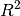

0.5 Release¶
Release 0.5.0¶
Statsmodels 0.5 is a large and very exciting release that brings together a year of work done by 38 authors, including over 2000 commits. It contains many new features and a large amount of bug fixes detailed below.
See the list of fixed issues for specific closed issues.
The following major new features appear in this version.
Support for Model Formulas via Patsy¶
Statsmodels now supports fitting models with a formula. This functionality is provided by patsy. Patsy is now a dependency for statsmodels. Models can be individually imported from the statsmodels.formula.api namespace or you can import them all as:
import statsmodels.formula.api as smf
Alternatively, each model in the usual statsmodels.api namespace has a from_formula classmethod that will create a model using a formula. Formulas are also available for specifying linear hypothesis tests using the t_test and f_test methods after model fitting. A typical workflow can now look something like this.
import numpy as np
import pandas as pd
import statsmodels.formula.api as smf
url = 'http://vincentarelbundock.github.io/Rdatasets/csv/HistData/Guerry.csv'
data = pd.read_csv(url)
# Fit regression model (using the natural log of one of the regressors)
results = smf.ols('Lottery ~ Literacy + np.log(Pop1831)', data=data).fit()
See here for some more documentation of using formulas in statsmodels
Empirical Likelihood (Google Summer of Code 2012 project)¶
Empirical Likelihood-Based Inference for moments of univariate and multivariate variables is available as well as EL-based ANOVA tests. EL-based linear regression, including the regression through the origin model. In addition, the accelerated failure time model for inference on a linear regression model with a randomly right censored endogenous variable is available.
Analysis of Variance (ANOVA) Modeling¶
Support for ANOVA is now available including type I, II, and III sums of squares. See ANOVA.
Multivariate Kernel Density Estimators (GSoC 2012 project)¶
Kernel density estimation has been extended to handle multivariate estimation as well via product kernels. It is available as sm.nonparametric.KDEMultivariate. It supports least squares and maximum likelihood cross-validation for bandwidth estimation, as well as mixed continuous, ordered, and unordered categorical data. Conditional density estimation is also available via sm.nonparametric.KDEMUltivariateConditional.
Nonparameteric Regression (GSoC 2012 project)¶
Kernel regression models are now available via sm.nonparametric.KernelReg. It is based on the product kernel mentioned above, so it also has the same set of features including support for cross-validation as well as support for estimation mixed continuous and categorical variables. Censored kernel regression is also provided by kernel_regression.KernelCensoredReg.
Quantile Regression Model¶
Quantile regression is supported via the sm.QuantReg class. Kernel and bandwidth selection options are available for estimating the asymptotic covariance matrix using a kernel density estimator.
Negative Binomial Regression Model¶
It is now possible to fit negative binomial models for count data via maximum-likelihood using the sm.NegativeBinomial class. NB1, NB2, and geometric variance specifications are available.
l1-penalized Discrete Choice Models¶
A new optimization method has been added to the discrete models, which includes Logit, Probit, MNLogit and Poisson, that makes it possible to estimate the models with an l1, linear, penalization. This shrinks parameters towards zero and can set parameters that are not very different from zero to zero. This is especially useful if there are a large number of explanatory variables and a large associated number of parameters. CVXOPT is now an optional dependency that can be used for fitting these models.
New and Improved Graphics¶
- ProbPlot: A new ProbPlot object has been added to provide a simple interface to create P-P, Q-Q, and probability plots with options to fit a distribution and show various reference lines. In the case of Q-Q and P-P plots, two different samples can be compared with the other keyword argument.
sm.graphics.ProbPlot
import numpy as np
import statsmodels.api as sm
x = np.random.normal(loc=1.12, scale=0.25, size=37)
y = np.random.normal(loc=0.75, scale=0.45, size=37)
ppx = sm.ProbPlot(x)
ppy = sm.ProbPlot(y)
fig1 = ppx.qqplot()
fig2 = ppx.qqplot(other=ppy)
- Mosaic Plot: Create a mosaic plot from a contingency table. This allows you to visualize multivariate categorical data in a rigorous and informative way. Available with
sm.graphics.mosaic. - Interaction Plot: Interaction plots now handle categorical factors as well as other improviments.
sm.graphics.interaction_plot. - Regression Plots: The regression plots have been refactored and improved. They can now handle pandas objects and regression results instances appropriately. See
sm.graphics.plot_fit,sm.graphics.plot_regress_exog,sm.graphics.plot_partregress,sm.graphics.plot_ccpr,sm.graphics.abline_plot,sm.graphics.influence_plot, andsm.graphics.plot_leverage_resid2.
Power and Sample Size Calculations¶
The power module (statsmodel.stats.power) currently implements power and sample size calculations for the t-tests (sm.stats.TTestPower, sm.stats.TTestIndPower), normal based test (sm.stats.NormIndPower), F-tests (sm.stats.FTestPower, :class:sm.stats.FTestAnovaPower <FTestAnovaPower>) and Chisquare goodness of fit (sm.stats.GofChisquarePower) test. The implementation is class based, but the module also provides three shortcut functions, sm.stats.tt_solve_power, sm.stats.tt_ind_solve_power and sm.stats.zt_ind_solve_power to solve for any one of the parameters of the power equations. See this blog post for a more in-depth description of the additions.
Other important new features¶
IPython notebook examples: Many of our examples have been converted or added as IPython notebooks now. They are available here.
Improved marginal effects for discrete choice models: Expanded options for obtaining marginal effects after the estimation of nonlinear discrete choice models are available. See
get_margeff.OLS influence outlier measures: After the estimation of a model with OLS, the common set of influence and outlier measures and a outlier test are now available attached as methods
get_influnceandoutlier_testto the Results instance. SeeOLSInfluenceandoutlier_test.New datasets: New datasets are available for examples.
Access to R datasets: We now have access to many of the same datasets available to R users through the Rdatasets project. You can access these using the
sm.datasets.get_rdatasetfunction. This function also includes caching of these datasets.Improved numerical differentiation tools: Numerical differentiation routines have been greatly improved and expanded to cover all the routines discussed in:
Ridout, M.S. (2009) Statistical applications of the complex-step method of numerical differentiation. The American Statistician, 63, 66-74
See the sm.tools.numdiff module.
Consistent constant handling across models: Result statistics no longer rely on the assumption that a constant is present in the model.
Missing value handling across models: Users can now control what models do in the presence of missing values via the
missingkeyword available in the instantiation of every model. The options are'none','drop', and'raise'. The default is'none', which does no missing value checks. To drop missing values use'drop'. And'raise'will raise an error in the presence of any missing data.
- Ability to write Stata datasets: Added the ability to write Stata
.dtafiles. Seesm.iolib.StataWriter.
- ARIMA modeling: Statsmodels now has support for fitting Autoregressive Integrated Moving Average (ARIMA) models. See
ARIMAandARIMAResultsfor more information. - Support for dynamic prediction in AR(I)MA models: It is now possible to obtain dynamic in-sample forecast values in
ARMAandARIMAmodels. - Improved Pandas integration: Statsmodels now supports all frequencies available in pandas for time-series modeling. These are used for intelligent dates handling for prediction. These features are available, if you pass a pandas Series or DataFrame with a DatetimeIndex to a time-series model.
- New statistical hypothesis tests: Added statistics for calculating interrater agreement including Cohen’s kappa and Fleiss’ kappa (See Interrater Reliability and Agreement), statistics and hypothesis tests for proportions (See proportion stats), Tukey HSD (with plot) was added as an enhancement to the multiple comparison tests (
sm.stats.multicomp.MultiComparison,sm.stats.multicomp.pairwise_tukeyhsd). Weighted statistics and t tests were enhanced with new options. Tests of equivalence for one sample and two independent or paired samples were added based on t tests and z tests (See Basic Statistics and t-Tests with frequency weights).
Major Bugs fixed¶
- Post-estimation statistics for weighted least squares that depended on the centered total sum of squares were not correct. These are now correct and tested. See #501.
- Regression through the origin models now correctly use uncentered total sum of squares in post-estimation statistics. This affected the  value in linear models without a constant. See #27.
Backwards incompatible changes and deprecations¶
- Cython code is now non-optional. You will need a C compiler to build from source. If building from github and not a source release, you will also need Cython installed. See the installation documentation.
- The
q_matrixkeyword to t_test and f_test for linear models is deprecated. You can now specify linear hypotheses using formulas.
- The
conf_intkeyword tosm.tsa.acfis deprecated. - The
namesargument is deprecated insm.tsa.VARand sm.tsa.SVAR <vector_ar.svar_model.SVAR>. This is now automatically detected and handled.
- The
orderkeyword tosm.tsa.ARMA.fitis deprecated. It is now passed in during model instantiation.
- The empirical distribution function (
sm.distributions.ECDF) and supporting functions have been moved tostatsmodels.distributions. Their old paths have been deprecated. - The
margeffmethod of the discrete choice models has been deprecated. Useget_margeffinstead. See above. Also, the vagueresidattribute of the discrete choice models has been deprecated in favor of the more descriptiveresid_devto indicate that they are deviance residuals.
- The class
KDEhas been deprecated and renamed toKDEUnivariateto distinguish it from the newKDEMultivariate. See above.
Development summary and credits¶
The previous version (statsmodels 0.4.3) was released on July 2, 2012. Since then we have closed a total of 380 issues, 172 pull requests and 208 regular issues. The detailed list can be viewed.
This release is a result of the work of the following 38 authors who contributed total of 2032 commits. If for any reason, we’ve failed to list your name in the below, please contact us:
- Ana Martinez Pardo <anamartinezpardo-at-gmail.com>
- anov <novikova.go.zoom-at-gmail.com>
- avishaylivne <avishay.livne-at-gmail.com>
- Bruno Rodrigues <rodrigues.bruno-at-aquitania.org>
- Carl Vogel <carljv-at-gmail.com>
- Chad Fulton <chad-at-chadfulton.com>
- Christian Prinoth <christian-at-prinoth.name>
- Daniel B. Smith <neuromathdan-at-gmail.com>
- dengemann <denis.engemann-at-gmail.com>
- Dieter Vandenbussche <dvandenbussche-at-axioma.com>
- Dougal Sutherland <dougal-at-gmail.com>
- Enrico Giampieri <enrico.giampieri-at-unibo.it>
- evelynmitchell <efm-github-at-linsomniac.com>
- George Panterov <econgpanterov-at-gmail.com>
- Grayson <graysonbadgley-at-gmail.com>
- Jan Schulz <jasc-at-gmx.net>
- Josef Perktold <josef.pktd-at-gmail.com>
- Jeff Reback <jeff-at-reback.net>
- Justin Grana <jg3705a-at-student.american.edu>
- langmore <ianlangmore-at-gmail.com>
- Matthew Brett <matthew.brett-at-gmail.com>
- Nathaniel J. Smith <njs-at-pobox.com>
- otterb <itoi-at-live.com>
- padarn <padarn-at-wilsonp.anu.edu.au>
- Paul Hobson <pmhobson-at-gmail.com>
- Pietro Battiston <me-at-pietrobattiston.it>
- Ralf Gommers <ralf.gommers-at-googlemail.com>
- Richard T. Guy <richardtguy84-at-gmail.com>
- Robert Cimrman <cimrman3-at-ntc.zcu.cz>
- Skipper Seabold <jsseabold-at-gmail.com>
- Thomas Haslwanter <thomas.haslwanter-at-fh-linz.at>
- timmie <timmichelsen-at-gmx-topmail.de>
- Tom Augspurger <thomas-augspurger-at-uiowa.edu>
- Trent Hauck <trent.hauck-at-gmail.com>
- tylerhartley <tyleha-at-gmail.com>
- Vincent Arel-Bundock <varel-at-umich.edu>
- VirgileFritsch <virgile.fritsch-at-gmail.com>
- Zhenya <evgeni-at-burovski.me>
Note
Obtained by running git log v0.4.3..HEAD --format='* %aN <%aE>' | sed 's/@/\-at\-/' | sed 's/<>//' | sort -u.